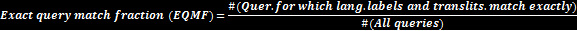
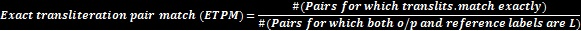
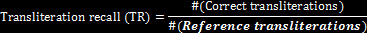
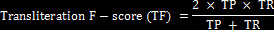
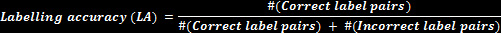
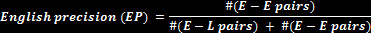
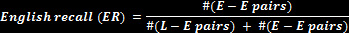
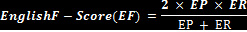

Results
A test data of 1270 lines for Hi-En pair was run for the model, with total 27296 tokens(en-12324, Hindi-13676, NE-1186), and it was evaluated on precision, recall and f-measure for Hindi and English and label accuracy.
The ideal way to measure the effectiveness of an algorithm output on task is not an obvious choice. We try to be as thorough as possible to reward or
penalize in all the different aspects of the labeling task, and try to adapt traditional metrics wherever applicable.
Evaluation metrics
We used the following metrics for evaluating task . Our metrics reflect various degrees of strictness, including the strictest (Exact Query Match Fraction)
to the most lenient (Labeling Accuracy) metrics.


The value of this ratio can be treated as a measure of transliteration precision, but the absolute values of the numerator and denominator are also
important. For example, when there are 2000 true L words in the reference annotations, it is possible that a method can detect 5 of these and produce the
correct transliterations for each, and have a ratio value of 1.0. Another method can detect 200 of these, and produce correct transliterations for 150, and
obtain a value of 0.75. We treat the second method as a better one. We note that, as Knight and Graehl point out, back-transliteration is less forgiving
than forward transliteration for there may be many ways to transliterate a word in another script (forward transliteration) but there is only one way in
which a transliterated word can be rendered back in its native form (back-transliteration). Our task thus requires the algorithm to only perform
back-transliteration and thus there is only one correct transliteration answer for a word in a given context. Along these lines, we also compute the
transliteration precision, recall and F-score as below.




Correct label pairs imply E−E and L−L, while incorrect label pairs include E−L and L−E, where E is for English and L stands for the language initial (H for
Hindi). Note that the notation E−L implies Output: E, Reference: L, and likewise for the other pairs.



Similarly, we have L-precision, L-recall, and L−F-Score for L where L is Hindi. We note that all names with ambiguous L-labelling and transliterations were
excluded from the analysis. In our transliteration evaluation strategy we relaxed certain constraints for string matching. We handle certain cases of
unicode normalization, and do not penalize mistakes made on homorganic nasal case,chandrabindu replaced by bindu and
the nonobligatory use of the nukta.